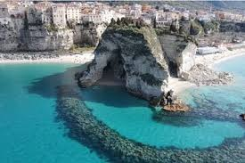

CityLoop Quest — Tropéa


Le centre historique se découvre à pied. Les distances sont courtes, mais les pavés, les pentes et les escaliers rendent le temps de marche plus important qu’un simple calcul kilométrique. Des chaussures stables valent mieux que des semelles élégantes.
La gare se trouve à l’intérieur des terres, à environ deux kilomètres du cœur ancien. Selon la saison, taxis et services locaux complètent le train. L’arrivée à pied est possible, mais elle demande de prévoir la chaleur et la circulation sur certaines portions.
Pour les plages, plusieurs descentes relient le promontoire au littoral. L’escalier vers Santa Maria dell’Isola offre les vues les plus célèbres, mais il faut conserver de l’énergie pour la remontée. En plein été, le trajet est plus confortable tôt le matin ou en fin de journée.
Explorer Capo Vaticano, Zungri, Pizzo ou Serra San Bruno est plus simple avec une voiture. Le réseau ferroviaire dessert certaines localités côtières, mais les correspondances et les accès aux sites intérieurs peuvent être limités. Vérifier les horaires le jour même évite de transformer une excursion en nuit imprévue.
Dans le centre, la voiture est rarement une alliée. Rues étroites, zones à circulation limitée et stationnement tendu incitent à se garer en périphérie. Tropéa récompense ceux qui acceptent de terminer le trajet à pied.